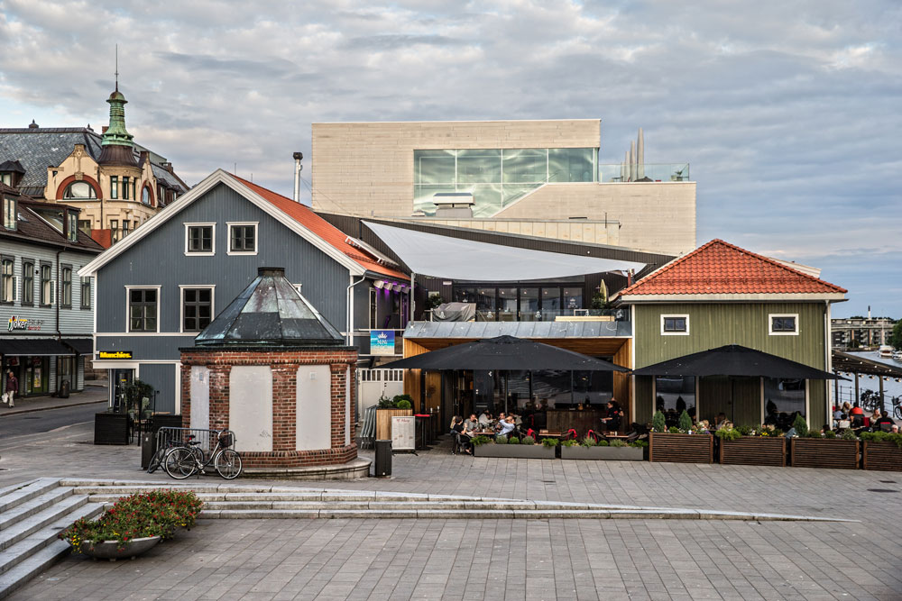
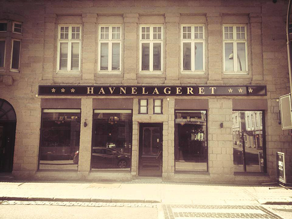
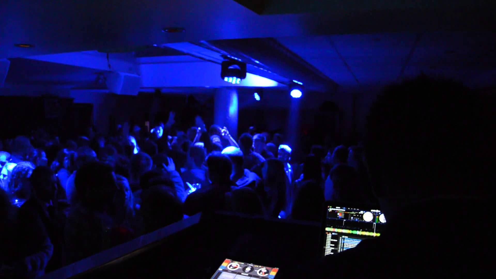

NiNi Beach

NiNi Beach - En oase på «Bryggas tak» i Fredrikstad med blant annet opptil
flere lounger, dusj og bar med gode solforhold, utsikt mot sjøen og magisk atmosfære.
Vi tilbyr et bredt utvalgt av diverse drinker, samt underholdning med både nasjonale
og internasjonale DJ-er og artister som står i tråd til lokalene gjennom hele sommeren.
Havnelageret

Med Havnelageret fester en skikkelig ølkultur i Fredrikstad. Vi tar inn det mest spennende
som skjer på den norske mikrobryggerifronten, og på øllageret har vi flasker fra hele verden.
Baren har alltid noe å anbefale på de dagene man vil prøve noe nytt. Om det ikke er øl som står
ditt hjerte nærmest, har vi selvfølgelig et solid utvalg annen drikke med og uten alkohol. Spisekartet
består av en blanding av klassiske retter og fremtidige favoritter. God drikke krever god mat, og kjøkkensjefen
gjør alt han kan for å gå din mor en høy gang på kjøkkenet. ...
Ocean Club

OCEAN CLUB er Fredrikstad`s hoteste Club/Lounge. Med moderne Interiør og en
luftig atmosfære i to etasjer, så er dette et byens sted nr. 1 for de som har lyst
til å danse og for de som som vil slappe av i litt roligere omgivelser i 2 etasje.
Ved å forandre lyssetting og innredning, blir OCEAN CLUB omgjort til Club/Lounge etter
kl 23.00 på fredager og lørdager. Våre Resident Dj`s sørger for å spille den beste av både
den nye og gamle musikken.